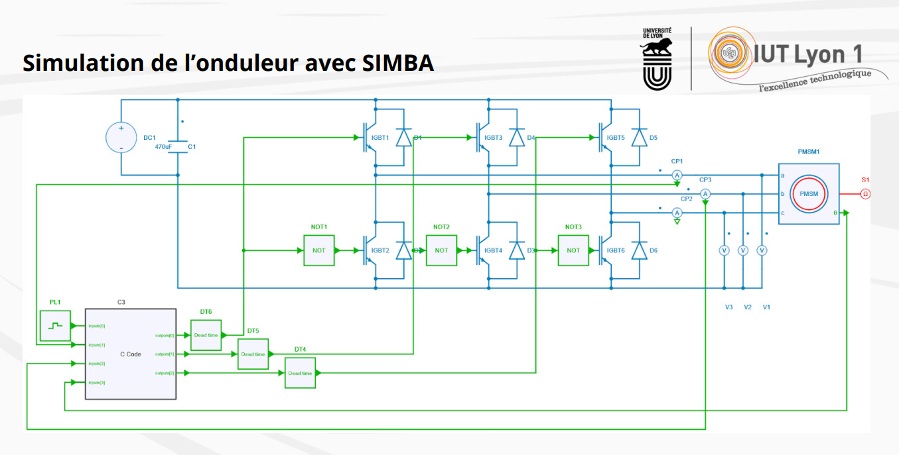

Apprentissage Critique : Rédiger un dossier de conception
Lors de ma troisième année de BUT GEII, j'ai eu l'opportunité de participer au projet international Formula Student avec l'IUT Lyon 1. L'objectif global était la conception électrique d'une monoplace. Dans ce cadre, j'ai endossé le rôle de chef de projet pour manager une équipe de 6 étudiants. Notre mission : concevoir, de la simulation au prototype, le système d'onduleur (convertisseur continu/alternatif) destiné à alimenter et piloter le moteur principal du véhicule.
Un défi majeur de ce projet s'inscrivait dans la continuité : nous devions partir des travaux réalisés par la promotion précédente, les faire évoluer, et produire un dossier de conception pour garantir la transmission de notre système à la promotion suivante.
Pour mener à bien cette conception, j'ai organisé le travail de l'équipe autour de trois grands axes, que j'ai ensuite synthétisés dans notre dossier de conception :
Ayant atteint une base fonctionnelle (rotation en marche avant), mais conscients des axes d'amélioration restants (intégration d'un freinage électrique et d'une marche arrière), l'enjeu final a été la rédaction du dossier de conception. Fort de mon expérience acquise lors de mes deux premières années de BUT, j'ai coordonné la rédaction de ce livrable technique. Il compile :
La conception et la simulation du projet sous SIMBA ont joué un rôle capital. Regroupant la batterie (DC1), le module 6 IGBT (IGBT 1 à 6 avec diode de recouvrement), le moteur (machine synchrone à aimants permanents, PMSM1), mais aussi et surtout le microcontrôleur (C3), cet outil rassemble l'intégralité du système sur une interface fonctionnelle.

Feuilletez le dossier ci-dessous.
Ce projet m'a appris à structurer une démarche d'ingénierie complète, de la théorie (simulation) à la documentation finale. J'ai développé mes compétences en management technique et j'ai compris qu'un système complexe n'est réellement abouti que lorsqu'il est accompagné d'un livrable clair et rigoureux, indispensable pour assurer la maintenance et la transmission du savoir-faire aux futures équipes.
Un onduleur est une technologie très utilisée dans le secteur de la mobilité, mais pas seulement : c'est un convertisseur de puissance transformant une alimentation continue en triphasée alternative. Ainsi, il permet par exemple d'alimenter un moteur à courant alternatif depuis une batterie.
Insulated Gate Bipolar Transistor : en électronique de puissance, c'est un semi-conducteur idéal pour les systèmes à haute puissance, il a la fonction d'un interrupteur commandé.
Il est vrai que nous aurions aussi pu utiliser Matlab avec Simulink, logiciel auquel nous sommes formés. Mais SIMBA était un choix à la fois pertinent car il nous a permis de simuler notre projet efficacement, mais aussi stratégique car nous étudions ce logiciel en classe d'électronique de puissance au même moment.